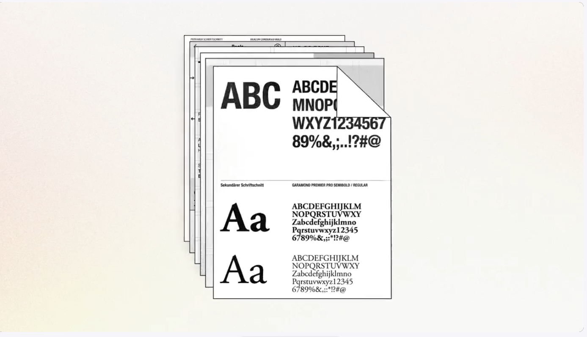

Always On Social
Powered by Touchstone
What is it: Always On Social is the AI Task Force’s brand-compliant social content platform for Microsoft Brands. It transforms simple product updates into publish-ready social content, ensuring brand voice, approved messaging, and compliance standards are applied automatically. The platform generates both copy and creative assets across key social channels and formats, helping teams produce high-quality content faster and with greater consistency. Built on a shared brand knowledge system, it enables scalable content creation, automated brand validation, and rapid onboarding of additional brands. The result is a streamlined workflow where on-brand content is the default, reducing manual review while increasing speed, accuracy, and consistency across campaigns.
Why we made it: Always On Social removes the bottleneck between a fast-moving social content calendar and brand compliance. Microsoft 365 Copilot releases require frequent social updates, but creating them traditionally depended on multiple specialists and manual reviews, making the process slow, inconsistent, and difficult to scale. The platform solves this by embedding brand standards directly into the content creation process. Brand voice, naming conventions, messaging guardrails, visual identity, and template requirements are codified as structured data, ensuring every post is brand-correct by default. Teams can generate approved copy and creative assets in minutes across all required social formats, reducing review overhead while increasing speed, consistency, and output. By making compliance a built-in property of the workflow rather than a final checkpoint, Always On Social enables the team to keep pace with product innovation and maintain a continuous, high-quality social presence.
Product update. Brand Brain. Skill. Copy options. Visual template. Optional motion. Social-ready output

- 01Enter your contentChoose a brand and social format, then enter a short feature update.
- 02Generate captionsThe system creates three on-brand caption options that follow naming, messaging, and compliance guidelines.
- 03Choose a captionReview the options, regenerate if needed, and select the one you want to use.
- 04Select a designBrand-approved colors, typography, and styling are applied automatically.
- 05Add animationSelect an approved motion style or keep the post static.
- 06Export your assetsChoose your desired formats and file type, then export your finished posts.
- 07Your brand-compliant social assets are ready to share across channels.
- 08More Templets, Brands and formats to come.
Always on social is powered by Touchstone Always on social is powered by Touchstone Always on social is powered by Touchstone Always on social is powerjdjrtsjsed by Touchstone Always on social is powrsjrsjsjjsrjjjjered b Touchstone
Touchstone System
